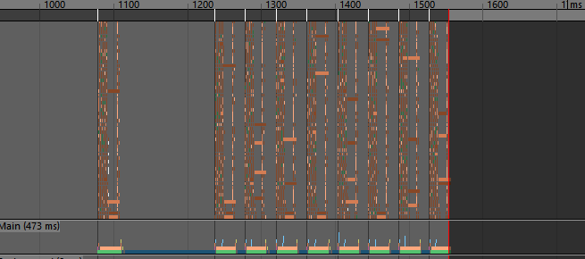
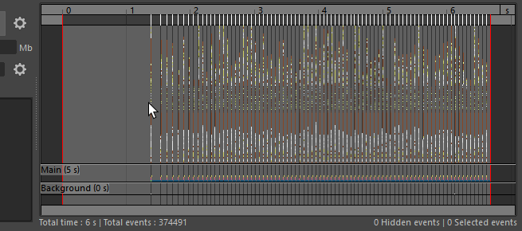
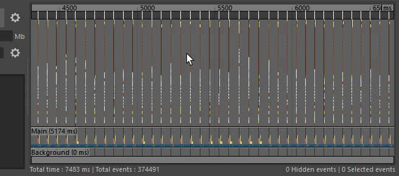

- 窗口 > 常规编辑器 > 分析器(Windows > General Editors > Profiler)
“分析器”(Profiler)允许您通过录制和演示每个过程消耗的时间量（以图表的形式呈现），定位场景内的性能瓶颈。
您可以确定何时开始和停止录制。也可以将录制内容保存为文本文件并在稍后将其重新加载到绘图区域。您可以通过“分析器”(Profiler)窗口或 profiler MEL/Python 命令来执行这些任务。
使用以下方法之一，为事件制图：
- 类别视图(Category view)：显示不同类别的活动（例如 XGen、Bifrost 和 Qt）。这是默认视图。
- CPU 视图(CPU view)：显示每个处理器的活动。选择此视图可更好地评估多线程。
注： CPU 视图在 Mac OSX 上不可用。
- “线程视图”(Thread view)：显示每个线程的活动。选择此视图可对单个线程上的所有活动解算。
有关如何录制过程以及如何使用和解释图表的详细信息，请参见分析场景以提高性能。
您还可以在插件中检测过程，以便进行分析。检测是对程序的修改，用于收集信息进行分析。使用 profiler -instrumentMel 标志检测 MEL 过程。使用 MProfiler::MProfilingScope() 方法，在您的插件中检测方法。有关详细信息，请参见通过 MEL/Python 和 API 使用“分析器”(Profiler)。
下表提供了使用“分析器”(Profiler)的任务的简要概述。
| 目标 | 操作 |
|---|---|
| 录制过程 |
单击 播放动画，然后单击“开始录制”(Start Recording)。缓冲区已满时，录制停止。 也可以单击“停止录制”(Stop Recording)。 按 Ctrl + R 可开始和停止录制。 |
| 在不同的图表视图之间切换：“类别视图”(Category view)、“CPU 视图”(CPU view)和“线程视图”(Thread view) |
使用热键 1、2 和 3 可在视图模式之间切换。 在“视图”(View)菜单中也提供了这些选项。  |
| 在绘图区域中导航 |
按住 Shift 和 Alt 键并使用鼠标右键向上/向下拖动可进行垂直缩放。 按住 Shift 和 Alt 键并使用鼠标右键向左/向右拖动可进行水平缩放。 |
| 增加录制缓冲区的大小 | 在“缓冲区大小”(Buffer size)属性中输入一个较大的值。 |
| 在绘图区域显示或隐藏特定事件 | 在绘图区域中单击鼠标右键，然后在隐藏和显示菜单项中选择。有关可显示/隐藏的选项的说明，请参见分析器标记菜单。 |
| 隔离或取消隔离分段 |
在分段栏上，单击要隔离的分段。在分段栏上再次单击它，以取消隔离并返回到默认视图。 |
| 在图表中查找事件 | 使用搜索框或者单击  可显示更多搜索选项。 可显示更多搜索选项。
|
| 识别事件 | 有关每个事件颜色表示什么的指南，请参见分析器颜色。 |